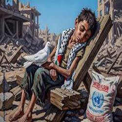

قصة أحمد
أحمد طفل كفيف بسبب الحرب لكنه قاوم الصعاب وحفظ كتاب الله كامل
توثيق قصص الصمود والتجارب الواقعية للمجتمع.
صور وفيديوهات توثق الأحداث واللحظات المهمة.
مقالات وتوثيق مكتوب يشرح الصمود والإنجازات.
طرق التواصل والمساهمة في المشروع ودعمه.
تُعدّ مشكلة نسيان صمود غزة من القضايا المعاصرة الخطيرة التي تعكس خللًا في الوعي الجمعي الإنساني والإعلامي، حيث يتحول الألم المستمر والمعاناة المتكررة إلى خبر عابر يفقد تأثيره مع مرور الوقت. فعلى الرغم من أن صمود غزة يمثل نموذجًا استثنائيًا في الثبات أمام الحصار والعدوان والانتهاكات المتواصلة، إلا أن هذا الصمود غالبًا ما يُهمَّش أو يُختزل في لحظات زمنية محدودة، ثم يُنسى لصالح قضايا أخرى أقل عمقًا من حيث الأثر الإنساني والأخلاقي. ويساهم الإعلام الانتقائي، وتسارع الأحداث العالمية، وضعف التوثيق الأكاديمي المستدام في ترسيخ هذا النسيان، مما يؤدي إلى تغييب الرواية الحقيقية لمعاناة أهل غزة ونضالهم اليومي من أجل البقاء والكرامة. إن تجاهل صمود غزة لا يقتصر على كونه تقصيرًا أخلاقيًا، بل يُعدّ إشكالية معرفية تستدعي من المؤسسات الجامعية والبحثية دورًا فاعلًا في حفظ الذاكرة الجماعية، وتعزيز الوعي بالقضية، وربط الأجيال الجديدة بحقائق الصراع وأبعاده الإنسانية، بما يضمن بقاء صمود غزة حاضرًا في الضمير الإنساني لا كحدث عابر، بل كقضية عدالة مستمرة.
 الصمود ليس مجرد كلمة، بل هو موقف متجذّر في وجدان الشعوب التي عانت من الاحتلال والعدوان، وغزة تمثل أبرز رموز هذا الصمود في العصر الحديث. على مدار سنوات الحصار والقصف، لم تنحنِ هذه المدينة، بل بقي أهلها متمسكين بالأمل، منغرسين في أرضهم، يبنون من الركام حياة جديدة، ويُصرّون على أن يكونوا أحياء رغم الدمار. الأطفال يذهبون إلى مدارسهم تحت أصوات الطائرات، والنساء يصنعن من المعاناة قوة، والرجال يعملون ليل نهار لإعادة الإعمار. الصمود في غزة ليس خيارًا، بل قدر embraced by people who refuse to surrender. في كل بيت قصة، وفي كل شارع حكاية، وفي كل نظرة أمل، درس في الثبات. ورغم الألم، يكتبون الحياة من جديد، كأنهم يقولون للعالم: "نحن هنا، وسنبقى".
اعرف المزيد عن صمود شعبنا هنا
لا يمكن الحديث عن الصمود دون استحضار تفاصيل الحياة اليومية في غزة، حيث يصبح أبسط ما يملكه الإنسان في أي مكان آخر، حلمًا هنا. الكهرباء تأتي ساعات محدودة، والماء مالح، وفرص العمل شحيحة، لكن رغم ذلك، ترى الابتسامات لا تفارق وجوه الأطفال، وتجد الفن يزدهر على الجدران المحطّمة، والموسيقى تنبع من بين أصوات الرصاص. الشباب يطلقون مبادرات مجتمعية، والمزارعون يزرعون أرضهم تحت الخطر، والطلاب يدرسون على ضوء الشموع. كل تفاصيل الحياة هنا تحكي عن شعب لا يُهزم بسهولة. في وجه الحرب، يولد الإبداع. في قلب الدمار، تُخلق المعاني. هذا هو الصمود الحقيقي: أن تختار الحياة رغم كل ما يدفعك للموت، وأن تؤمن بالغد رغم قسوة الحاضر. غزة لا تصمد فقط، بل تُعلّم العالم معنى الكرامة والعزة والثبات.
في قلب حي الشجاعية المدمر، تقف أم عطية، سيدة فلسطينية تجاوزت السبعين عامًا، متحدّية الخوف والدمار، تصنع الخبز لأطفال الحي وتوزعه مجانًا. رغم القصف والدموع، ترفض المغادرة، وتقول: "غزة والقدس لنا، وسنبقى هنا مهما حصل." قصتها أصبحت رمزًا للأم الفلسطينية التي تقاوم بكل حب وأمل.
هذه قصة إنسانية عن رجل يحمل قلب من حجر اذ انه فقط اعز ما يملك انه ابنه حيث كان ثابت اكتر من الحجر وانه هو من يواسي احبابه وليس العكس وانه اكبر مثال للصمود وصورة حقيقية عن معانة القطاع بأجمعه
رزان منير عرفات هي إحدى الشابات الفلسطينيات التي جسدت قصة صمود وشجاعة في غزة، تعكس معاناة وأمل أهل غزة وسط ظروف صعبة، خصوصًا خلال الحروب والحصار، حيث تسعى للحفاظ على كرامتها ومجتمعها عبر العمل والمشاركة في أنشطة إنسانية واجتماعية رغم التحديات الكبيرة.
يوجد الكثير من أمثال قصص رزان منهم من فقد قدمه ويوجد من فقد يديه ويوجد من فقد جميع أطرافه ومنهم من فقد أعينه وهذا غير ير فقدان الأهل والأبة ولكن جميعنا صامدون باذن الله
في أحد أحياء غزة التي عرفت الألم أكثر من الهدوء، كان يعيش الجد خالد مع حفيدته الوحيدة "ريم"، تلك الطفلة ذات الضفائر الطويلة والضحكة التي كانت تنير ظلام الحرب. كانت ريم كل ما تبقى للجد من أبناءه الذين فقدهم في عدوان سابق. كانت تمثل له الحياة، الأمل، والصبر. كل صباح، كان يمسك بيدها الصغيرة، يرافقها إلى المدرسة، رغم القصف، رغم الرعب. كانت تهمس له: "جدي، أنا مش خايفة، إحنا أقوياء". وكان يبتسم، يخفي خوفه داخل قلب أثقلته الحروب، ويشد على يدها كأنه يحمي الكون كله. في أحد الأيام، سقط صاروخ على الحي. عمّ الغبار، تكسّرت النوافذ، وتصاعدت الصرخات. ركض خالد كالمجنون نحو مدرستها، قلبه يسبق قدميه. وجد الركام، ولم يجد ريم. بحث عنها لساعات، لأيام. ثم أخبروه أنها رحلت... كانت واحدة من أطفال غزة الذين خذلتهم الإنسانية. منذ ذلك اليوم، جلس خالد على عتبة المنزل، يحمل دميتها الصغيرة، ينظر إلى الطريق الذي كانت تركض فيه نحوه. لم يعد يبكي، فقط يهمس: "كان اسمها ريم... وكانت الحياة". قصة الجد خالد وحفيدته ريم ليست حكاية عابرة، بل وجع يتكرر في غزة كل يوم، يروي صمود شعب لا يستسلم، رغم الفقد.


| # | اسم الحرب | السنة | المدة | ملاحظات |
|---|---|---|---|---|
| 1 | حرب الفرقان | 2008 - 2009 | 22 يوم | أول حرب واسعة بعد الحصار |
| 2 | حجارة السجيل | 2012 | 8 أيام | تصعيد عسكري مكثف |
| 3 | الجرف الصامد | 2014 | 51 يوم | أطول الحروب على غزة |
| 4 | سيف القدس | 2021 | 11 يوم | ربط غزة بالقدس |
| 5 | 7 اكتوبر | 2023 | مستمرة | عدوان واسع النطاق |
أحمد طفل كفيف بسبب الحرب لكنه قاوم الصعاب وحفظ كتاب الله كامل
شابّة مبتورة اليد بسبب الحرب تحدّت الصعوبات وأسست مشروعًا مجتمعيًا نفعت به جميع المنطقة
امرأة رعت سبعة اطفال لوحدا بعد فقدان زوجها واهلها كلهم
شيخ بال80 من عمره بقي صامدا في بيته بالرغم من محاصرته ومنع كل احتياجاته الطبيعية من قبل الاحتلال
طفلة أصرت على الدراسة وتفوقت بمسابقات الرياضيات بالرغم من التحديات اليومية ورغم انها اصبحت يتيمة وبقت لوحدها